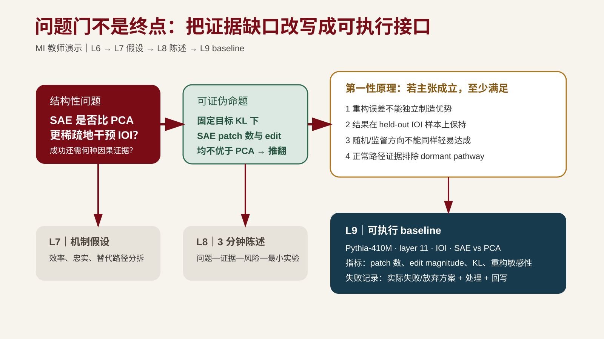

L6 按需方法案例输入¶
身份：保留的教学构造或具名来源分析；按各段说明区分。它不是学生的默认个人项目，也不要求跨课连续完成。以下保留原案例叙述；其中跨课措辞描述该构造包的历史关系，不规定当前课堂进度。
七、方法示例：从研究空白到问题门材料¶
承接第 5 课虚构教学样例。第 5 课样例状态：证据地图初版 + 研究空白候选 G1（缺角空白：阅读卡是否强制定位原文→降低遗漏；真实性仍待真实窄检索，重要性与可行性只作课堂演示）。
本课动作链：
第一步：候选题比较与从 G1 改写为结构性问题
先用四维选题标准卡比较候选题池（均为虚构教学样例）：
| 候选 | 生成路径 | 意义 | 新颖性 | 可行性 | 兴趣 | 处理 |
|---|---|---|---|---|---|---|
| G1：阅读卡是否降低 AI 摘要限定条件遗漏率 | 文献缺角空白 | 位于论证链关键位置 | 待核验 | 同一批论文 + 固定 rubric 可行 | 与本人项目一致 | 选定 |
| C2：AI 摘要遗漏是否集中在跨论文比较处 | 异常观察（样例构造） | 若成立可解释部分遗漏来源 | 待核验 | 需要更大标注样本，周期内只能做初步 | 中等 | 保留为背景问题 |
| C3：把引用核验方法迁移到代码审查场景 | 重构/迁移 | 实践意义强 | 可能是方法迁移，待核验 | 需要新任务语料，超出周期 | 高 | 淘汰（可行性） |
选定 G1 后改写为结构性问题。
研究问题：在需要逐条核验引用的计算机论文阅读任务中，结构化阅读卡是否降低 AI 摘要的限定条件遗漏率？
第二步：写出非例
- 不比较不同大模型的通用写作质量（不同层面）；
- 不评价综述是否具有语言美感（不同指标）；
- 不处理需要专业实验设备的学科（超出周期与范围）。
第三步：写出可证伪命题
若相称的比较设计与不确定性分析支持遗漏率不降反升，则反驳当前条件下的方向命题；精度不足则仍不能判断。仅排除了某个有意义改善幅度，不能排除任意微小下降。核验成本若不可接受，影响采用决定，不自动推翻遗漏减少。
第四步：第一性原理推导
（见 §四·4 示例，完成四步推导。）
第五步：重要性说明
- 知识后果（So what?）：如果不回答这个问题，缺少判断阅读卡是否减少遗漏的直接比较；G1先问效果，生成机制与评价提示的区分交给L7设计。
- 实际后果（Who cares?）：需要用 AI 辅助文献综述的研究者可以从答案中判断是否引入阅读卡结构，以及在什么任务中它不适用。
- 课程周期可行性：使用同一批 CS 论文、固定模型和 rubric，人工基准标注限定条件遗漏——在课程周期内可形成最小验证；样本量与运行次数在第 9 课实验规格中锁定。
第六步：问题门材料自查
对照 §五·3 的 9 项门条件逐项自查。确认：候选文献 ≥ 10 篇和精读卡 ≥ 3 张是第 3-6 课累计结果；证据地图初版由第 5 课建立并继续补全；研究问题、非例、可证伪命题、第一性原理和重要性由本课回写；至少一条真实失败/死路写入 failure-log.md 并回写对应工件；AI 使用记录在第 1-6 课持续更新。
第七步：提交
提交指向当前个人项目版本的链接或 tag，不重复制作汇报文档。
本课不要求在课堂内完成全部自查，只要求跑通一次"研究空白 → 结构性问题 → 非例 → 可证伪命题 → 第一性原理 → 重要性 → 自查"的链路，并产出 problem-definition.md 和第一性原理推导初版。
按需对照：SAE问题门如何生成baseline¶
完整问题定义见 mi-problem-definition-demo.md。它把第 5 课“patching success 不等于 causal faithfulness”的证据缺口拆成三个命题：效率 H-eff、稳健性 H-rob 和忠实性 H-faith，并明确非例、推翻条件和五项必要条件。这是不同模型与表示设置的进阶对照；当前课堂MI主线仍为IOI并接续L7–L9，不要求学生完成SAE项目。

图注：课程自绘迁移示例，不表示实验已运行，也不替代阅读卡本段教学构造例。来源与许可见 assets/README.md（未公开；请查对应公开来源）。
该示例的失败记录是：初版问题“SAE 是否因果忠实”把 C02 的 intervention efficiency 过度概括为机制结论；经 C16/C31 核验后拆成三条命题，并把状态从可能的 stable 降为 review。处理结果分别回写到问题定义、证据地图和 L9 对照。它按需作来源比较示范；问题门仍检查本人实际遇到的失败或放弃记录及处理。